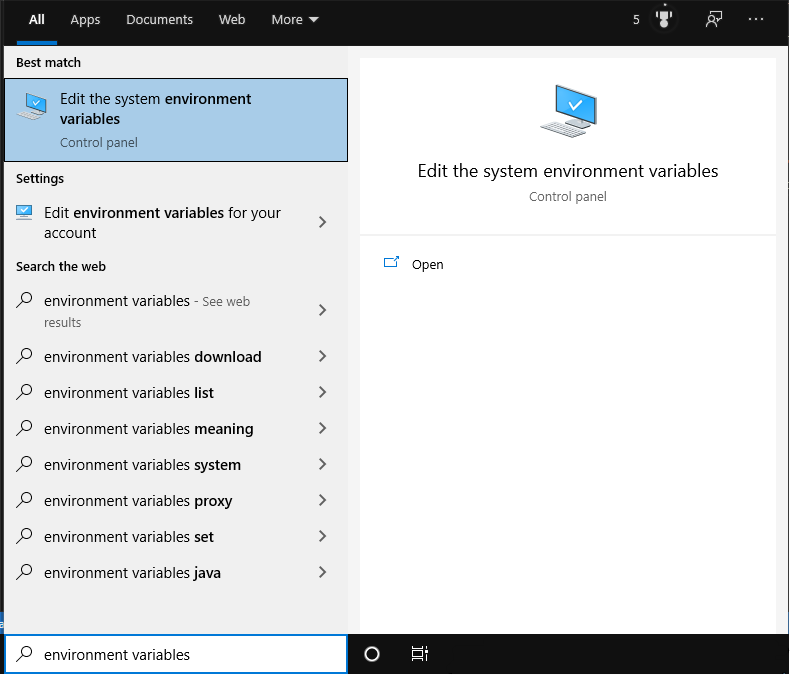
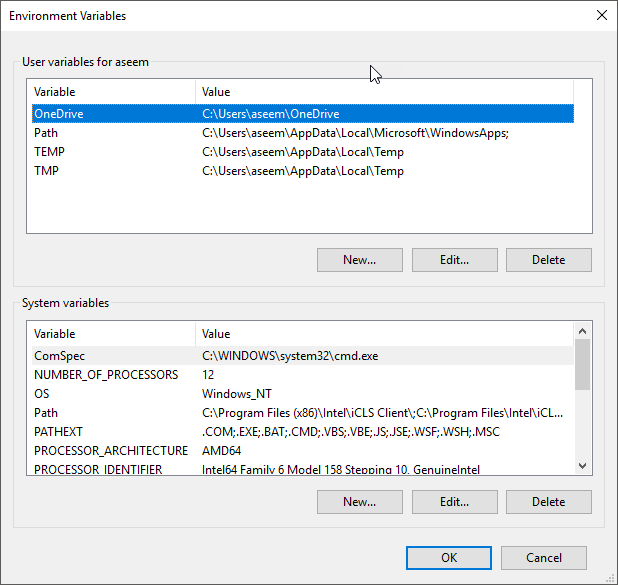

If you don't have python, pip, flask, flask-cors and python selenium installed, follow the instructions below to do so.
You can download python from here and follow the instructions there to install python.
You can check if you already have pip installed by running the following command:
py -m pip --version
If you don't, this page provides instructions on how to install pip.
Flask, flask-cors and selenium can be installed with pip using the commands:
py -m pip install Flask
py -m pip install flask-cors
py -m pip install selenium
Chromedriver can be downloaded fom here - make sure to
download the correct version corresponding to the version of chrome you want to test on.
Once chromedriver is downloaded, open the environment variables screen. This can be found by searching "environment variables" in the searchbar as shown.

Click on the box labelled "environment variables" and a screen similar to this one should open.

Click on "new" and then "browse directory".
Navigate to the folder containing chromedriver and click OK.
In the webpage you want to log:
<script src="interactor.min.js" type="application/javascript"></script>
<script>
var interactions = new Interactor({
endpoint : 'http://127.0.0.1:5000/postmethod',
interactionEvents : [#events#]
});
</script>
In receiver.py, replace #path# with an existing filepath that you want log files to be stored in (use double backslashes in paths).
Once you are ready to receive logs from a webpage, run the following commands, replacing #path# with the current filepath of receiver.py (single backslashes, no quotation marks).
set FLASK_APP=#path#
flask run
You will now receive a log of any user interactions with the host webpage, for each session. These logs can then be replayed by running replicator.py and entering the path of the log file.